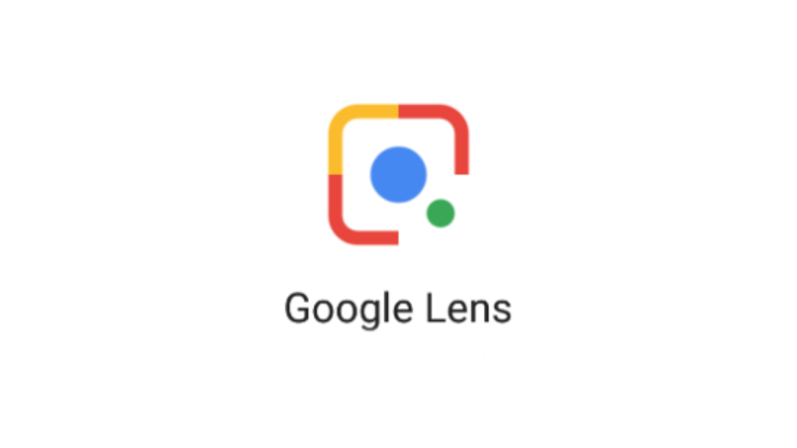
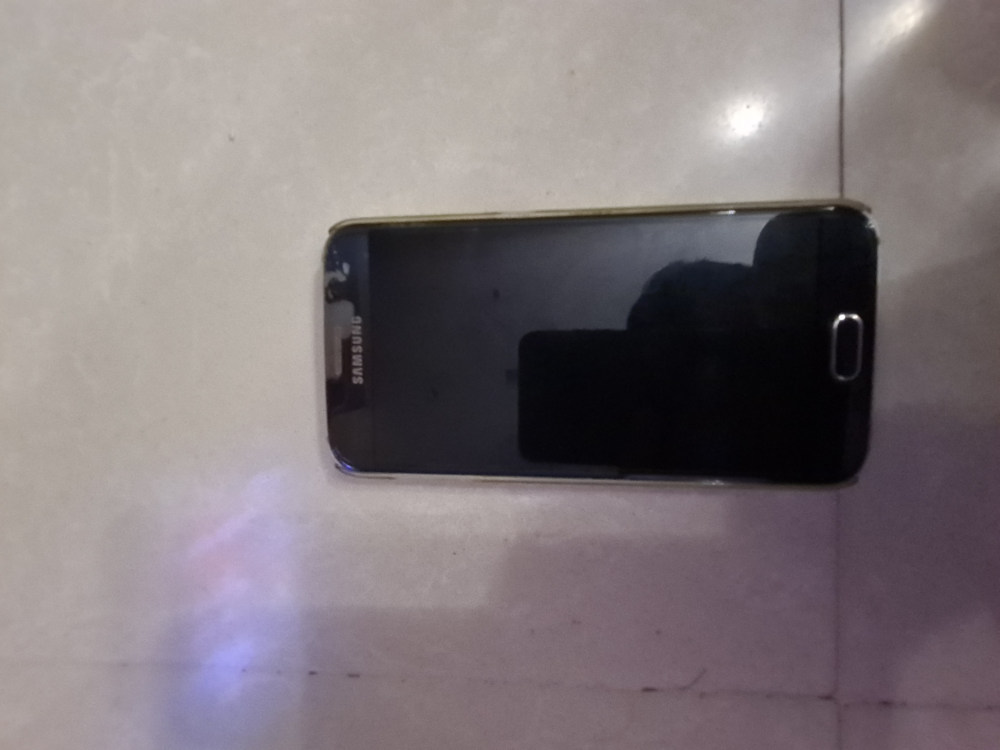
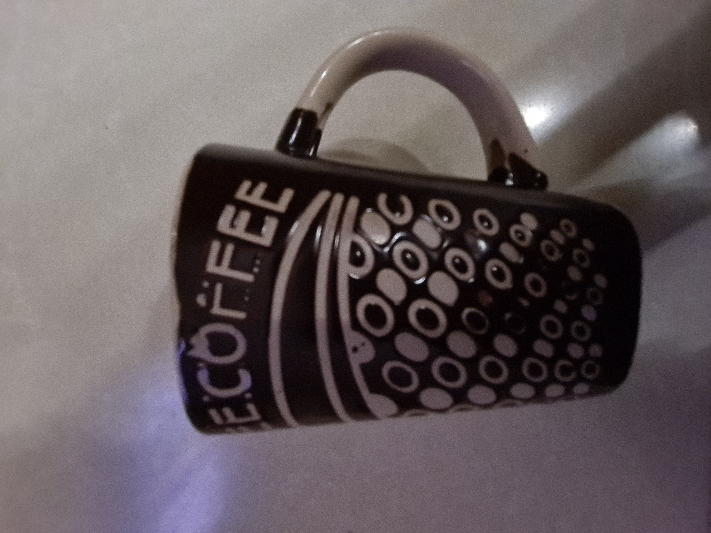
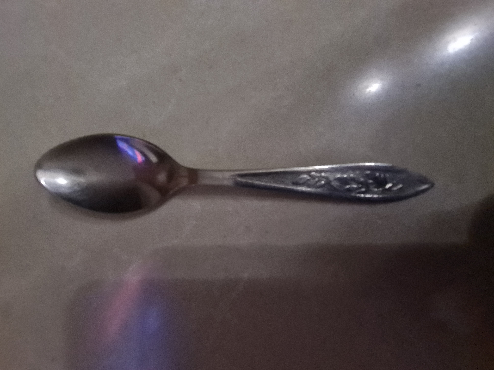

v/s
MobileNet
Test Image 1

Output on google lens Project:
Samsung Galaxy S6
Output on Mobilenet Project:
Mobile phone
Result: google lens is more accurate
Test Image 2

Output on google lens Project:
coffee mug
Output on Mobilenet Project:
mug
Result: google lens is more accurate
Test Image 3

Output on google lens Project:
spoon
Output on Mobilenet Project:
perfume
Result: google lens is more accurate